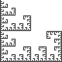

1.F. The Inverse Problem
Examples and Practice Problems
For practice recognizing reflections and rotations, we consider two examples. Click on the small image to see a decomposition and an illustration of finding the IFS rules.

Return to the
Inverse Problem
.